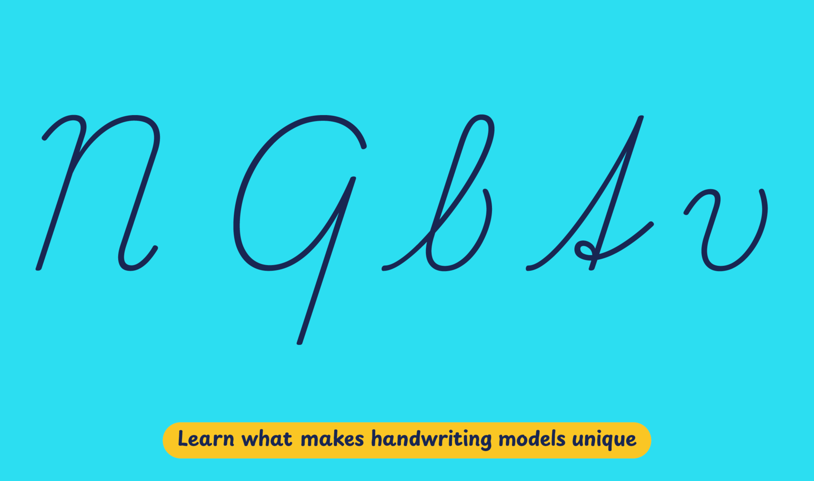

In 2020, the latest iteration of the Rámcový Učebný Plán, or Framework Curriculum, was published by the Ministerstvo. It provides a sample of fully-joined, cursive writing based on ‘Zjednodušená psací latinka‘, or Simplified Latin script, which was ratified by the government of erstwhile Czechoslovakia in 1932. According to the curriculum, students must learn to write based on this model, following its letter shapes as well as slant.
The Ministerstvo has been sharing this model with private publishers since 1993, and in the absence of official digitization, publishers have produced their own versions for use in their textbooks. Until 2020, schools only received government funding for purchasing textbooks if they did so from state-verified publishers, though that is no longer the case.
Playwrite Slovensko is a variable font with a weight range from Thin (100) to Regular (400), and supports over 150 Latin-based languages.
To contribute, see github.com/TypeTogether/Playwrite.
This slanted continuous cursive features medium to short extenders and is executed at a slow stroke speed. The capital letters maintain a cursive, mostly unadorned structure, with distinctive traits such as an unusually constructed 'Q' and a vertical spine in 'S'. Lowercase letters have loops on extenders but lack knots, with the exception of the German-style 't'. Several lowercase letters begin with curved entry strokes. The letter 'z' is styled in a plain italic form and does not have a descender.

Playwrite Slovensko appears in font menus with a two-letter country code ‘SK’,
Playwrite SK, and features four styles: Thin, ExtraLight, Light, and
Regular.
The download .zip file includes the variable font and standard static ttf fonts
for each style.
The Playwrite school fonts are based on the findings of Primarium, a groundbreaking educational effort that documents the history and current practice of handwriting models taught to primary school students worldwide. This typographic engine serves teachers, educators, and parents by generating localized libre fonts. These Playwrite fonts are complemented by Playpen Sans, an informal and fun typeface designed for annotations, instructions, and student notes – that also includes emojis.
For more information about the Primarium project, visit primarium.info and to learn more about handwriting education in Slovakia, see primarium.info/countries/slovakia.
Windows: Download the font file to your computer. Navigate to where you saved the font file and double-click it to open. Click the "Install" button at the top of the font preview window. The font is now installed and ready to be used across your apps.
macOS: After downloading the font file to your Mac, right-click it in Finder and select "Open With" > "Font Book". Then, click "Install Font" in the font preview window that pops up. The font is now installed and ready to be used across your apps.
The Playwrite font family uses complex OpenType features to generate connected writing. Some common applications require these features to be manually activated.
Note: This font family doesn't include Bold or Italic styles, so please avoid applying them in text editors. If you use the common 'B' and 'I' buttons, you will automatically generate low-quality styles.
Google Docs and Slides: From the font selector drop-down, go to "More Fonts" and search for the desired font name, in this case, "Playwrite SK", and click OK. If some text is already selected, the font choice will apply.
Microsoft Word: Go to Format in the Menu bar, select Font, and then the Advanced tab. Activate "Contextual Alternates" and "Kerning for fonts below" to apply these settings to all text sizes.
LibreOffice: In macOS, to select the different styles, go to Format in the Menu bar, select Character, and use the Typeface menu.
Adobe InDesign: Open the Paragraph Panel and select Adobe "World-Ready Paragraph Composer" from the contextual menu.
Adobe Illustrator: Navigate to Preferences > Type, check the "Show Indic Options" box, and close preferences. Then open the Paragraph Panel and select "Middle Eastern Composer" from the contextual menu.
Adobe Photoshop: Access the Paragraph Panel, then choose "World-Ready Layout" from the contextual menu.
The above instructions are also available in PDF format here.